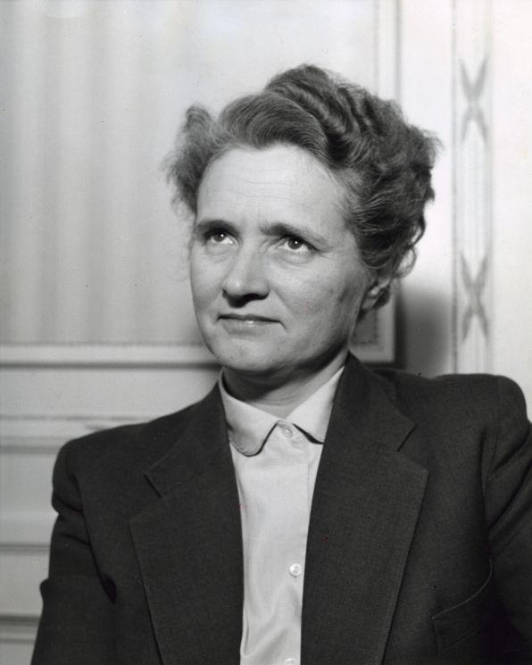
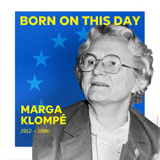
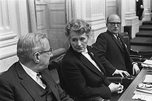
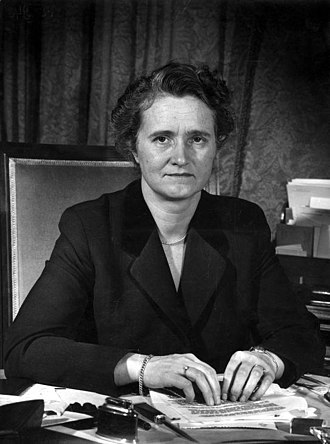
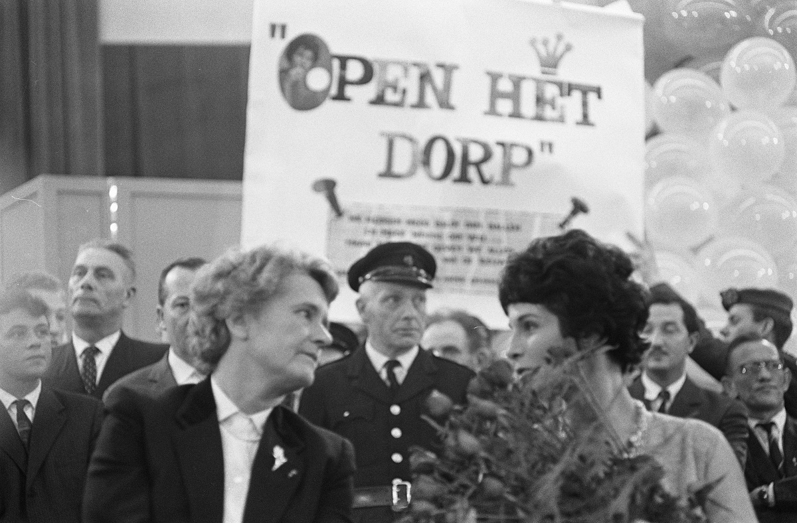

Mini presentatie
Marga
Klompé
De eerste vrouwelijke minister van Nederland
1912 - 1986

photo-slot 1
Slide 2
Wie was zij?
1912, geboren in Arnhem, katholiek gezin
Enige van vijf kinderen die mocht studeren
Doctoraat in wis- en natuurkunde
Tweede Wereldoorlog: actief in het verzet
Hulp aan gevluchte burgers (eten, medische zorg)
Na de oorlog politiek actief: meer vrouwen nodig in de partij

photo-slot 2a
Arnhem, 1912
Geboren in een katholiek gezin.
photo-slot 2b
Tweede Wereldoorlog
Actief in het verzet, hielp onderduikers.
Slide 3
Wat heeft ze bereikt?
1948
photo-slot 3a
Tweede Kamer
Ze ging de politiek in voor de KVP.
1952

photo-slot 3b
Europees Parlement
Een van de eerste Nederlanders op Europees niveau.
1956

photo-slot 3c
Eerste vrouwelijke minister
Minister van Maatschappelijk Werk (kabinet-Drees).
1965
photo-slot 3d
Algemene Bijstandswet
Iedere Nederlander recht op hulp van de overheid.

photo-slot 4
Slide 4
Waarom is ze belangrijk?
Pionier voor vrouwen in de politiek
Vernieuwer van de armoedezorg
Bijstandswet: basis van het sociale stelsel
Ambitie en bescheidenheid hand in hand
Een leven in dienst van de samenleving
photo-slot 5
Slide 5
Afsluiting
"Ze opende een deur, en liet hem open voor wie na haar kwam."
← Vorige
1
/
6
Marga Klompé - Op Niveau H1
[N] notities
Volgende →